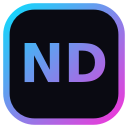

ND LAUNCHER
MODEL DOWNLOADS 1.1.3
Твои модели. Одна очередь.
Выбери файл и папку в браузере — загрузку продолжит лаунчер.
Hugging FaceCivitai.comCivitai.redModelScope.cn
Подключение
Проверяю настройки…
Как начать
- Запусти лаунчер и включи приём загрузок из браузера в настройках.
- Скопируй ключ в лаунчере, вставь выше и проверь связь.
- В настройках скачивания браузера включи запрос места сохранения.
- Скачай модель с одного из четырёх сайтов.
Закрытые модели Hugging Face и Civitai могут требовать API-токен в лаунчере. Cookies не передаются. ModelScope: публичные файлы и доступные подписанные ссылки. Инкогнито не поддерживается.